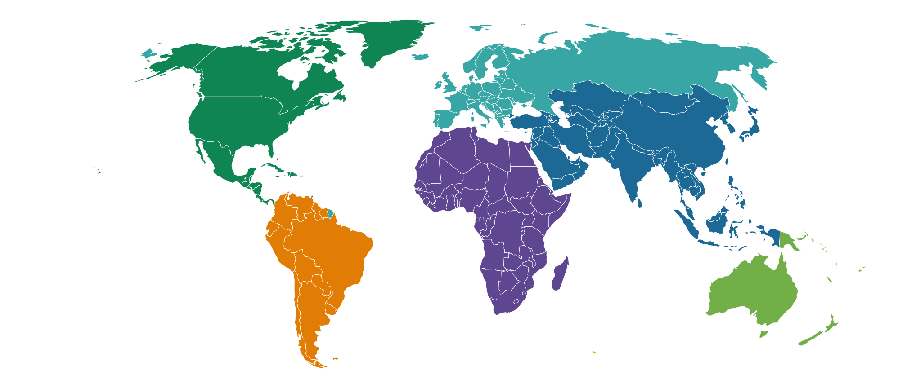
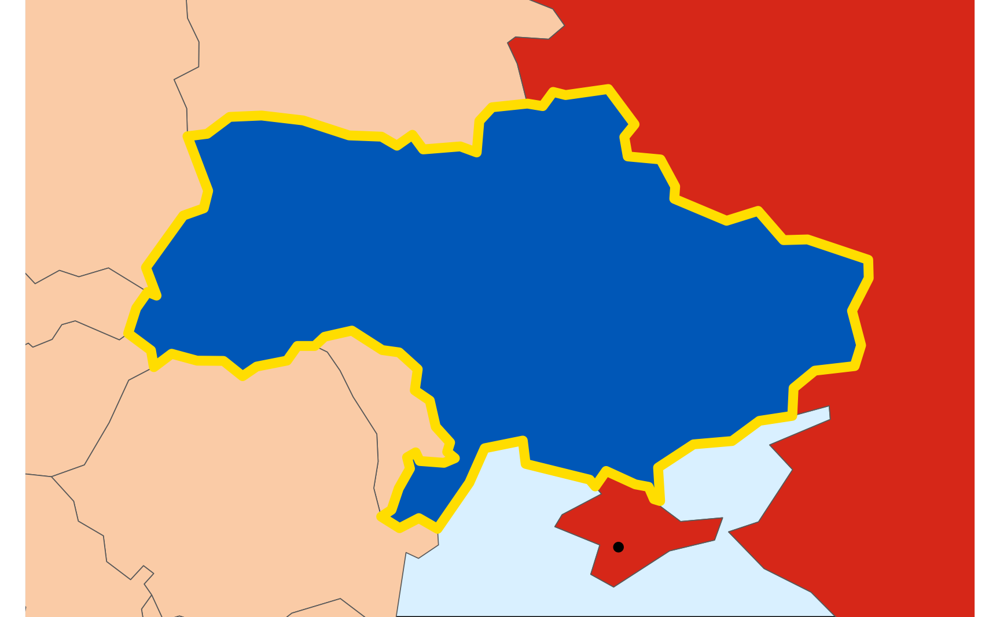
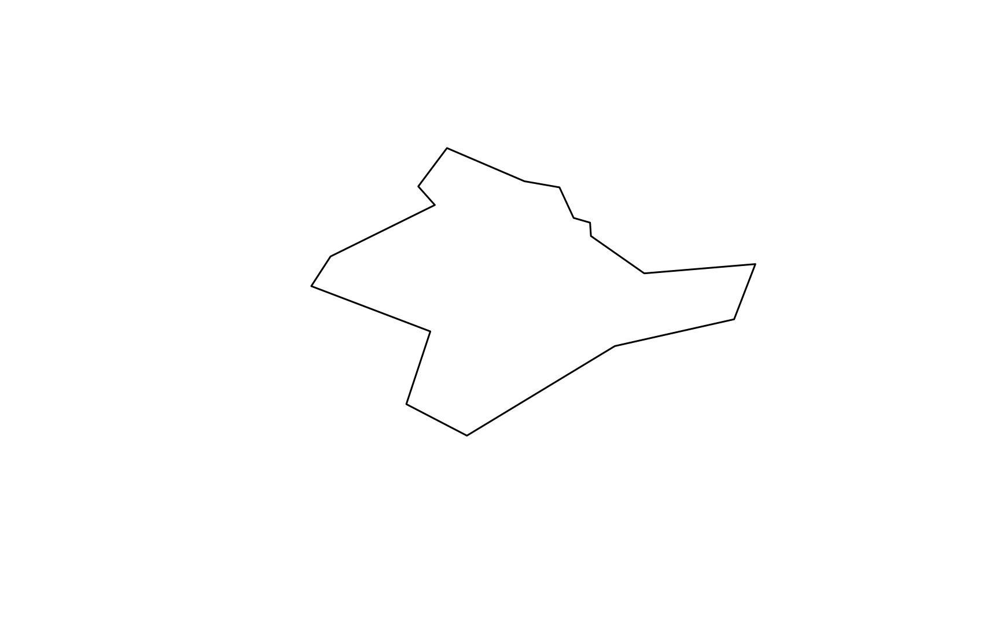
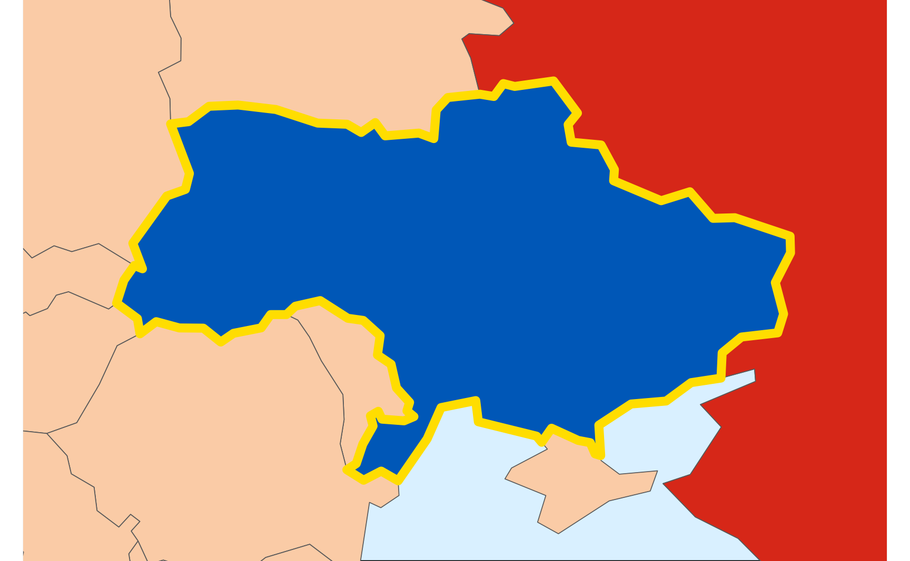
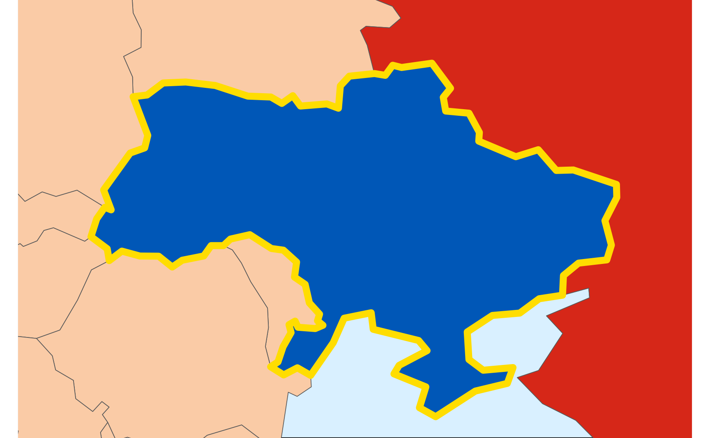
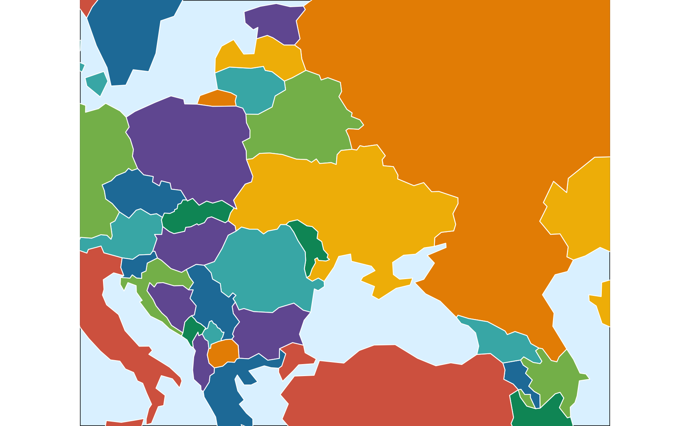
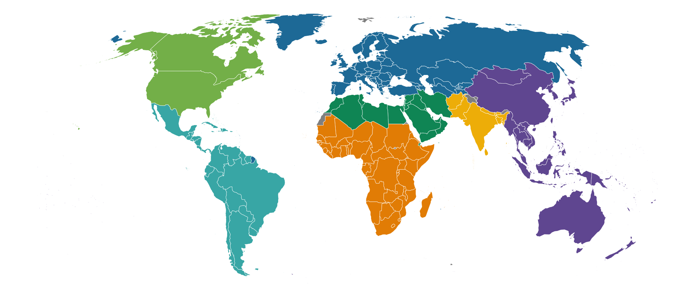
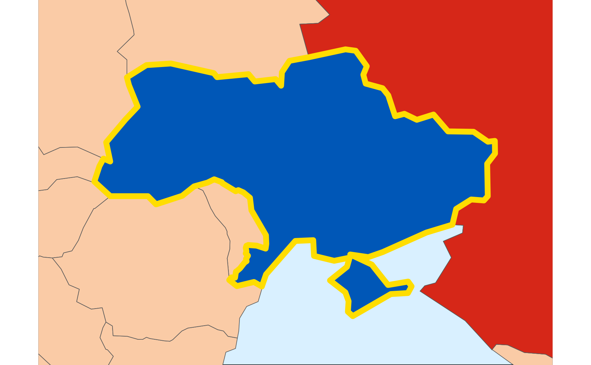

The Natural Earth Project provides high quality public domain geographic data with all sorts of incredible detail, at three resolutions: high (1:10m), medium (1:50m), and low (1:110m). I use their data all the time in my own work and research, and the {rnaturalearth} package makes it really easy to get their data into R for immediate mapping. I mean, look at this!
library(tidyverse)library(sf)library(rnaturalearth)# Set some colorsukr_blue<-"#0057b7"# Blue from the Ukrainian flagukr_yellow<-"#ffdd00"# Yellow from the Ukrainian flagrus_red<-"#d62718"# Red from the Russian flagclr_ocean<-"#d9f0ff"clr_land<-"#facba6"# CARTOColors Prism (https://carto.com/carto-colors/)carto_prism=c("#5F4690", "#1D6996", "#38A6A5", "#0F8554", "#73AF48", "#EDAD08", "#E17C05", "#CC503E", "#94346E", "#6F4070", "#994E95", "#666666")ne_countries(scale =110)|>filter(admin!="Antarctica")|>ggplot()+geom_sf(aes(fill =continent), color ="white", linewidth =0.1)+scale_fill_manual(values =carto_prism, guide ="none")+coord_sf(crs ="+proj=robin")+theme_void()

Natural Earth’s de facto policy
Maps are intensely political things. There are dozens of disputes over maps and land and territories (e.g., Palestine, Western Sahara, Northern Cyprus, Taiwan, Kashmir, etc.), and many UN member states don’t recognize other UN member states (Israel isn’t recognized by many Arab states; Pakistan doesn’t recognize Armenia).
Natural Earth Vector draws boundaries of sovereign states according to defacto status. We show who actually controls the situation on the ground. For instance, we show China and Taiwan as two separate states. But we show Palestine as part of Israel.
Treating the Natural Earth de facto policy as a de facto policy
I’m not weighing in on that policy here! I don’t super like it—it makes it really hard to map Palestine, for instance—but it is what it is. In this post I’m treating the de facto policy as the de facto situation of the data.
Unfortunately, the pre-built point-of-view datasets only exist for the 10m high resolution data. If we want to show medium or low resolution maps, we’re stuck with the de facto version of the map, which means Crimea will be shown as part of Russia. Here’s the low resolution version of Ukraine, with Crimea in Russia:
world<-ne_countries(scale =110, type ="map_units")ukraine<-world|>filter(admin=="Ukraine")russia<-world|>filter(admin=="Russia")ukraine_bbox<-ukraine|>st_buffer(dist =100000)|># Add 100,000 meter buffer around the country st_bbox()ggplot()+geom_sf(data =world, fill =clr_land)+geom_sf(data =russia, fill =rus_red)+geom_sf(data =ukraine, fill =ukr_blue, color =ukr_yellow, linewidth =2)+coord_sf( xlim =c(ukraine_bbox["xmin"], ukraine_bbox["xmax"]), ylim =c(ukraine_bbox["ymin"], ukraine_bbox["ymax"]))+theme_void()+theme(panel.background =element_rect(fill =clr_ocean))
Instead we’ll manipulate the geometry data directly and move Crimea from the Russia shape to the Ukraine shape by extracting the Crimea POLYGON from Russia and merging it with Ukraine.
The actual geometric shapes for all the countries in world are MULTIPOLYGONs, or collections of POLYGON geometric objects. For instance, Russia is defined as a single MULTIPOLYGON:
The only way I figured out what of these POLYGONs were was to plot them individually until I saw a recognizable shape. And if I use a different map (like the 50m or 10m resolution maps), there’s no guarantee that Russia will have 14 POLYGONs or that the 14th one will be Crimea. We need a more reliable way to find the Crimea shape.
One way to do this is to create a POINT object based somewhere in Crimea and do some geometric set math to identify which Russian POLYGON contains it. The point 45°N 34°E happens to be in the middle of Crimea:
crimea_point<-st_sfc(st_point(c(34, 45)), crs =st_crs(world))ggplot()+geom_sf(data =world, fill =clr_land)+geom_sf(data =russia, fill =rus_red)+geom_sf(data =ukraine, fill =ukr_blue, color =ukr_yellow, linewidth =2)+geom_sf(data =crimea_point)+coord_sf( xlim =c(ukraine_bbox["xmin"], ukraine_bbox["xmax"]), ylim =c(ukraine_bbox["ymin"], ukraine_bbox["ymax"]))+theme_void()+theme(panel.background =element_rect(fill =clr_ocean))

We can use it with st_intersects() to identify the Russia POLYGON that contains it:
# Extract the Russia MULTIPOLYGON and convert it to polygonsrussia_polygons<-world|>filter(admin=="Russia")|>st_geometry()|>st_cast("POLYGON")# Extract the Russia polygon that has Crimea in itcrimea_polygon<-russia_polygons|>keep(\(x)st_intersects(x, crimea_point, sparse =FALSE))# This is the same as russia_polygons[14]plot(crimea_polygon)

Extracting the Crimea POLYGON from Russia
We can then remove that polygon from Russia and recombine everything back into a MULTIPOLYGON. It works!
# Remove Crimea from Russianew_russia<-russia_polygons|>discard(\(x)any(st_equals(x, crimea_polygon, sparse =FALSE)))|>st_combine()|>st_cast("MULTIPOLYGON")ggplot()+geom_sf(data =world, fill =clr_land)+geom_sf(data =new_russia, fill =rus_red)+geom_sf(data =ukraine, fill =ukr_blue, color =ukr_yellow, linewidth =2)+coord_sf( xlim =c(ukraine_bbox["xmin"], ukraine_bbox["xmax"]), ylim =c(ukraine_bbox["ymin"], ukraine_bbox["ymax"]))+theme_void()+theme(panel.background =element_rect(fill =clr_ocean))

Adding the Crimea POLYGON to Ukraine
Next we need to merge crimea_polygon with Ukraine. We’ll convert Ukraine to its component POLYGONs, combine those with Crimea, and recombine everything back to a MULTIPOLYGON. It also works!
# Extract the Ukraine MULTIPOLYGON and convert it to polygonsukraine_polygons<-world|>filter(admin=="Ukraine")|>st_geometry()|>st_cast("POLYGON")# Add Crimea to Ukrainenew_ukraine<-st_union(c(ukraine_polygons, crimea_polygon))|>st_cast("MULTIPOLYGON")ggplot()+geom_sf(data =world, fill =clr_land)+geom_sf(data =new_russia, fill =rus_red)+geom_sf(data =new_ukraine, fill =ukr_blue, color =ukr_yellow, linewidth =2)+coord_sf( xlim =c(ukraine_bbox["xmin"], ukraine_bbox["xmax"]), ylim =c(ukraine_bbox["ymin"], ukraine_bbox["ymax"]))+theme_void()+theme(panel.background =element_rect(fill =clr_ocean))

Updating Russia and Ukraine in the full data
The last step is to modify the full world dataset and replace the existing geometry values for the two countries with the updated boundaries:
Now that world_un has the corrected boundaries in it, it works like normal. Here’s a map of Eastern Europe, colored by mapcolor9 (a column that comes with Natural Earth data that lets you use 9 distinct colors to fill all countries without having bordering countries share colors). Crimea is in Ukraine now:
eastern_eu_bbox<-ukraine|>st_buffer(dist =700000)|># Add 700,000 meter buffer around the country st_bbox()ggplot()+geom_sf(data =world_un, aes(fill =factor(mapcolor9)), linewidth =0.25, color ="white")+scale_fill_manual(values =carto_prism, guide ="none")+coord_sf( xlim =c(eastern_eu_bbox["xmin"], eastern_eu_bbox["xmax"]), ylim =c(eastern_eu_bbox["ymin"], eastern_eu_bbox["ymax"]))+theme_void()+theme(panel.background =element_rect(fill =clr_ocean))

The whole game
Everything above was fairly didactic, with illustrations at each intermediate step. Here’s the whole process all in one place:
world_110<-ne_countries(scale =110, type ="map_units")crimea_point_110<-st_sfc(st_point(c(34, 45)), crs =st_crs(world_110))# Extract the Russia MULTIPOLYGON and convert it to polygonsrussia_polygons_110<-world_110|>filter(admin=="Russia")|>st_geometry()|>st_cast("POLYGON")# Extract the Russia polygon that has Crimea in itcrimea_polygon_110<-russia_polygons_110|>keep(\(x)st_intersects(x, crimea_point_110, sparse =FALSE))# Remove Crimea from Russianew_russia_110<-russia_polygons_110|>discard(\(x)any(st_equals(x, crimea_polygon_110, sparse =FALSE)))|>st_combine()|>st_cast("MULTIPOLYGON")# Extract the Ukraine MULTIPOLYGON and convert it to polygonsukraine_polygons_110<-world_110|>filter(admin=="Ukraine")|>st_geometry()|>st_cast("POLYGON")# Add Crimea to Ukrainenew_ukraine_110<-st_union(c(ukraine_polygons_110, crimea_polygon_110))|>st_cast("MULTIPOLYGON")world_un_110<-world_110|>mutate(geometry =case_when(admin=="Ukraine"~new_ukraine_110,admin=="Russia"~new_russia_110, .default =geometry))
Moving Crimea with medium resolution (50m) data
This same approach works for other map resolutions too, like 50m:
world_50<-ne_countries(scale =50, type ="map_units")crimea_point_50<-st_sfc(st_point(c(34, 45)), crs =st_crs(world_50))# Extract the Russia MULTIPOLYGON and convert it to polygonsrussia_polygons_50<-world_50|>filter(admin=="Russia")|>st_geometry()|>st_cast("POLYGON")# Extract the Russia polygon that has Crimea in itcrimea_polygon_50<-russia_polygons_50|>keep(\(x)st_intersects(x, crimea_point_50, sparse =FALSE))# Remove Crimea from Russianew_russia_50<-russia_polygons_50|>discard(\(x)any(st_equals(x, crimea_polygon_50, sparse =FALSE)))|>st_combine()|>st_cast("MULTIPOLYGON")# Extract the Ukraine MULTIPOLYGON and convert it to polygonsukraine_polygons_50<-world_50|>filter(admin=="Ukraine")|>st_geometry()|>st_cast("POLYGON")# Add Crimea to Ukrainenew_ukraine_50<-st_union(c(ukraine_polygons_50, crimea_polygon_50))|>st_cast("MULTIPOLYGON")world_un_50<-world_50|>mutate(geometry =case_when(admin=="Ukraine"~new_ukraine_50,admin=="Russia"~new_russia_50, .default =geometry))
Here’s a higher quality map of Eastern Europe with Crimea in Ukraine:
Let’s export the adjusted geographic data to GeoJSON:
# Save as geojson for Observable Plotst_write( obj =world_un, dsn ="ne_110m_admin_0_countries_un_BROKEN.geojson", driver ="GeoJSON", quiet =TRUE, delete_dsn =TRUE# Overwrite the existing .geojson if there is one)
lol what even. The new Ukraine shape seems to have broken boundaries that distort everything else in the map. Weirdly, Ukraine is filled with the ocean color while the rest of the globe—both the ocean and whatever countries didn’t have their borders erased—is the color of land.
¯\_(ツ)_/¯. Now Ukraine is the color of the ocean and the whole rest of the world is the dark blue of the Ukrainian flag. And it didn’t zoom in at all.
GeoJSON and ↻ ↺ winding order ↻ ↺
This is a symptom of an issue with GeoJSON winding order. GeoJSON cares about the direction that country borders (and all LINESTRING elements) are drawn in. Exterior borders should be drawn counterclockwise; interior borders should be drawn clockwise. If a geographic shape doesn’t follow this winding order, bad things happen. Specifically:
a shape that represents a tiny speck of land becomes inflated to represent the whole globe minus that tiny speck of land, the map fills with a uniform color, the local projection explodes. (via @fil)
That’s exactly what’s happening here. Somehow the winding order is getting reversed when we combine Ukraine with Crimea. {sf} itself doesn’t care about winding order, so everything works fine within R; GeoJSON is picky about winding order, so things break.
Fixing it is tricky though! {sf} uses a bunch of different libraries behind the scenes to do its geographic calculations, including GEOS and S2, and they all have different approaches to polygon creation. Apparently GEOS goes clockwise by default while others go counterclockwise, or something. It should theoretically be possible to fix by adding st_sfc(check_ring_dir = TRUE) after making the new Ukraine shape:
# It would be cool if this worked but it doesn't :(new_ukraine<-st_union(c(ukraine_polygons, crimea_polygon))|>st_sfc(check_ring_dir =TRUE)|>st_cast("MULTIPOLYGON")
BUT there’s another solution. We can force {sf} to not use the S2 library (which it uses by default, I guess?), since S2 seems go in the wrong direction. If we turn off S2 with sf_use_s2(FALSE), make the new Ukraine shape, and then turn S2 back on with sf_use_s2(TRUE), things work!
# Add Crimea to Ukrainesf_use_s2(FALSE)new_ukraine_110<-st_union(c(ukraine_polygons_110, crimea_polygon_110))|>st_cast("MULTIPOLYGON")sf_use_s2(TRUE)
Here’s the full process with the 110m map:
world_110<-ne_countries(scale =110, type ="map_units")crimea_point_110<-st_sfc(st_point(c(34, 45)), crs =st_crs(world_110))# Extract the Russia MULTIPOLYGON and convert it to polygonsrussia_polygons_110<-world_110|>filter(admin=="Russia")|>st_geometry()|>st_cast("POLYGON")# Extract the Russia polygon that has Crimea in itcrimea_polygon_110<-russia_polygons_110|>keep(\(x)st_intersects(x, crimea_point_110, sparse =FALSE))# Extract the Ukraine MULTIPOLYGON and convert it to polygonsukraine_polygons_110<-world_110|>filter(admin=="Ukraine")|>st_geometry()|>st_cast("POLYGON")# Add Crimea to Ukrainesf_use_s2(FALSE)## Spherical geometry (s2) switched offnew_ukraine_110<-st_union(c(ukraine_polygons_110, crimea_polygon_110))|>st_cast("MULTIPOLYGON")## although coordinates are longitude/latitude, st_union assumes that they are planarsf_use_s2(TRUE)## Spherical geometry (s2) switched on# Remove Crimea from Russianew_russia_110<-russia_polygons_110|>discard(\(x)any(st_equals(x, crimea_polygon_110, sparse =FALSE)))|>st_combine()|>st_cast("MULTIPOLYGON")# Add the modified Russia and Ukraine to the main dataworld_un_110_fixed<-world_110|>mutate(geometry =case_when(admin=="Ukraine"~new_ukraine_110,admin=="Russia"~new_russia_110, .default =geometry))# Save as GeoJSONst_write( obj =world_un_110_fixed, dsn ="ne_110m_admin_0_countries_un.geojson", driver ="GeoJSON", quiet =TRUE, delete_dsn =TRUE)
Here’s the new world map with the the correct Ukraine:
Natural Earth isn’t the only source of geographic data online, and other sources use de jure borders instead of de facto borders, like these:
GISCO
The European Commission’s Eurostat hosts the Geographic Information System of the Commission (GISCO), which provides GIS data for the EU. They offer global shapefiles that follow EU-based de jure borders. The {giscoR} package provides a nice frontend for getting that data into R at 5 different resolutions (1:60m, 1:20m, 1:10m, 1:3m, and super detailed 1:1m!). It does not come with additional metadata for each country, though (i.e. there are no regional divisions, population values, map colors, names in other languages, and so on), so it requires some extra cleaning work if you want those details. For example, can add region information with {countrycode}:
library(giscoR)library(countrycode)world_gisco<-gisco_get_countries( year ="2024", epsg ="4326", resolution ="60")|># Add World Bank regionsmutate(region =countrycode(ISO3_CODE, origin ="iso3c", destination ="region"))world_gisco|>filter(NAME_ENGL!="Antarctica")|>ggplot()+geom_sf(aes(fill =region), color ="white", linewidth =0.1)+scale_fill_manual(values =carto_prism, guide ="none")+coord_sf(crs ="+proj=robin")+theme_void()

Since the EU doesn’t de jure-ily recognize the Russian occupation of Crimea, Crimea is in Ukraine:
ukraine_gisco<-world_gisco|>filter(NAME_ENGL=="Ukraine")russia_gisco<-world_gisco|>filter(NAME_ENGL=="Russian Federation")ukraine_gisco_bbox<-ukraine_gisco|>st_buffer(dist =100000)|># Add 100,000 meter buffer around the country st_bbox()ggplot()+geom_sf(data =world_gisco, fill =clr_land)+geom_sf(data =russia_gisco, fill =rus_red)+geom_sf(data =ukraine_gisco, fill =ukr_blue, color =ukr_yellow, linewidth =2)+coord_sf( xlim =c(ukraine_gisco_bbox["xmin"], ukraine_gisco_bbox["xmax"]), ylim =c(ukraine_gisco_bbox["ymin"], ukraine_gisco_bbox["ymax"]))+theme_void()+theme(panel.background =element_rect(fill =clr_ocean))

It’s possible to use GISCO data with Observable too. We could load the data into R and clean it up there (like adding regions and other details) and the save it as GeoJSON, like we did with the Natural Earth data.
They’re based on Natural Earth, but with some specific adjustments like adding Crimea to Ukraine, making Gaza a little bit bigger so that it doesn’t get dropped at lower resolutions like 110m, and using UN boundaries for Western Sahara.
Like GISCO, though, these don’t have the additional columns that Natural Earth comes with (country names in a bunch of languages, region and continent designations, map coloring schemes, population and GDP estimates, etc.), and those would need to be added manually in R or Observable or whatever.
@online{heiss2025,
author = {Heiss, Andrew},
title = {How to Move {Crimea} from {Russia} to {Ukraine} in Maps with
{R}},
date = {2025-02-13},
url = {https://www.andrewheiss.com/blog/2025/02/13/natural-earth-crimea/},
doi = {10.59350/28kp0-nbq92},
langid = {en}
}
---title: "How to move Crimea from Russia to Ukraine in maps with R"date: 2025-02-13description: "Natural Earth's de facto on-the-ground policy conflicts with de jure boundaries. Use {sf} and R to relocate parts of country shapes."image: index_files/figure-html/plot-eastern-europe-50-1.pngtwitter-card: image: "index_files/figure-html/plot-eastern-europe-50-1.png"open-graph: image: "index_files/figure-html/plot-eastern-europe-50-1.png"categories: - r - tidyverse - ggplot - ojs - observable plot - gis - mapsformat: html: include-in-header: - text: | <style type="text/css"> div.sourceCode > pre.sourceCode.js::before { content: 'Observable JS'; display: block; text-align: left; font-size: 1em; margin-bottom: 7px; border-bottom: #4c4c4c 1px solid; padding-left: 4.25px; padding-bottom: 5px; color: #aaaaaa; } div.sourceCode > pre.sourceCode.r::before { content: 'R'; display: block; text-align: left; font-size: 1em; margin-bottom: 7px; border-bottom: #4c4c4c 1px solid; padding-left: 4.25px; padding-bottom: 5px; color: #aaaaaa; } </style>doi: 10.59350/28kp0-nbq92citation: true---```{r}#| label: setup#| include: falseknitr::opts_chunk$set(fig.width =6,fig.height =6*0.618,fig.retina =3,dev ="ragg_png",fig.align ="center",out.width ="90%",collapse =TRUE,cache.extra =1234# Change number to invalidate cache)options(digits =4,width =300,dplyr.summarise.inform =FALSE)```## The Natural Earth ProjectThe [Natural Earth Project](https://www.naturalearthdata.com/downloads/) provides high quality public domain geographic data with all sorts of incredible detail, at three resolutions: high (1:10m), medium (1:50m), and low (1:110m). I use their data all the time in my own work and research, and [the {rnaturalearth} package](http://ropensci.github.io/rnaturalearth/) makes it really easy to get their data into R for immediate mapping. I mean, look at this!```{r}#| label: plot-natural-earth-world-map#| fig-width: 7#| fig-height: 3#| out-width: 100%#| message: false#| warning: falselibrary(tidyverse)library(sf)library(rnaturalearth)# Set some colorsukr_blue <-"#0057b7"# Blue from the Ukrainian flagukr_yellow <-"#ffdd00"# Yellow from the Ukrainian flagrus_red <-"#d62718"# Red from the Russian flagclr_ocean <-"#d9f0ff"clr_land <-"#facba6"# CARTOColors Prism (https://carto.com/carto-colors/)carto_prism =c("#5F4690", "#1D6996", "#38A6A5", "#0F8554", "#73AF48", "#EDAD08", "#E17C05", "#CC503E", "#94346E", "#6F4070", "#994E95", "#666666")ne_countries(scale =110) |>filter(admin !="Antarctica") |>ggplot() +geom_sf(aes(fill = continent), color ="white", linewidth =0.1) +scale_fill_manual(values = carto_prism, guide ="none") +coord_sf(crs ="+proj=robin") +theme_void()```### Natural Earth's *de facto* policy**Maps are intensely political things.** There are dozens of disputes over maps and land and territories (e.g., Palestine, Western Sahara, Northern Cyprus, Taiwan, Kashmir, etc.), and many UN member states don't recognize other UN member states ([Israel isn't recognized by many Arab states](https://en.wikipedia.org/wiki/International_recognition_of_Israel); [Pakistan doesn't recognize Armenia](https://en.wikipedia.org/wiki/Armenia%E2%80%93Pakistan_relations)).The Natural Earth Project's [official policy for disputed territories](https://www.naturalearthdata.com/about/disputed-boundaries-policy/) is to reflect on-the-ground *de facto* [control over each piece of land](https://www.naturalearthdata.com/downloads/10m-cultural-vectors/10m-admin-0-details/)^[[OpenStreetMap does this too](https://osmfoundation.org/w/images/d/d8/DisputedTerritoriesInformation.pdf).]:> Natural Earth Vector draws boundaries of sovereign states according to defacto status. We show who actually controls the situation on the ground. For instance, we show China and Taiwan as two separate states. But we show Palestine as part of Israel.Though [they claim that this *de facto* policy "is rigorous and self consistent"](https://www.naturalearthdata.com/about/disputed-boundaries-policy/), it gets them in trouble a lot. For instance, there are nearly [two dozen issues on GitHub](https://github.com/search?q=repo:nvkelso/natural-earth-vector+crimea&type=issues) about Crimea, which is [illegally occupied by Russia](https://en.wikipedia.org/wiki/Annexation_of_Crimea_by_the_Russian_Federation) but [*de jure* part of Ukraine](https://en.wikipedia.org/wiki/Russian_occupation_of_Crimea#Annexation). [There](https://github.com/nvkelso/natural-earth-vector/issues/391)[are](https://github.com/nvkelso/natural-earth-vector/issues/489)[huge](https://github.com/nvkelso/natural-earth-vector/issues/926)[debates](https://github.com/nvkelso/natural-earth-vector/issues/810)[over](https://github.com/nvkelso/natural-earth-vector/issues/812) the ethics of the *de facto* policy. ::: {.callout-important}#### Treating the Natural Earth *de facto* policy as a *de facto* policy**I'm not weighing in on that policy here!** I don't super like it—it makes it really hard to map Palestine, for instance—but it is what it is. In this post I'm treating the *de facto* policy as the *de facto* situation of the data.:::### Natural Earth *de jure* points of viewNatural Earth's solution for disputed territories is to [offer different options](https://github.com/nvkelso/natural-earth-vector/issues/391#issuecomment-890772203) to reflect country-specific *de jure* points of view. They offer [pre-built high resolution shapefiles for 31 different points of views](https://www.naturalearthdata.com/blog/admin-0-countries-point-of-views/), so it's possible to download data that reflect *de jure* boundaries for a bunch of different countries. Their other shapefiles [all have columns like `fclass_us`, `fclass_ua`, and so on](https://github.com/nvkelso/natural-earth-vector/blob/master/packages/Natural_Earth_quick_start/LOCALIZATION.md#setting-boundary-pov) for doing… something?… with the point of view. **I can't figure out how these columns work** beyond localization stuff (i.e. changing place names based on the point of view). The documentation doesn't say much about how to actually use these different points of view, and [pre-built medium and low resolution maps don't exist yet](https://github.com/nvkelso/natural-earth-vector/issues/875#issuecomment-1726400482).For example, the US doesn't *de jure*-ily recognize the Russian occupation of Crimea, so if we [download the pre-built high resolution (10m) version of the world](https://www.naturalearthdata.com/blog/admin-0-countries-point-of-views/) from the US point of view, we can see Crimea as part of Ukraine (we have to [download this manually](https://www.naturalearthdata.com/blog/admin-0-countries-point-of-views/)—`rnaturalearth::ne_countries()` doesn't support POV files):```{r}#| label: plot-ne-us10-ukraineworld_10_us <-read_sf("ne_10m_admin_0_countries_usa/ne_10m_admin_0_countries_usa.shp")world_10_us |>filter(ADMIN =="Ukraine") |>ggplot() +geom_sf(fill = ukr_blue) +theme_void()```Unfortunately, the pre-built point-of-view datasets [only exist for the 10m high resolution data](https://github.com/nvkelso/natural-earth-vector/issues/875#issuecomment-1726400482). If we want to show medium or low resolution maps, we're stuck with the *de facto* version of the map, which means Crimea will be shown as part of Russia. Here's the low resolution version of Ukraine, with Crimea in Russia:```{r}#| label: plot-ne-110-crimea-in-russiaworld <-ne_countries(scale =110, type ="map_units")ukraine <- world |>filter(admin =="Ukraine")russia <- world |>filter(admin =="Russia")ukraine_bbox <- ukraine |>st_buffer(dist =100000) |># Add 100,000 meter buffer around the country st_bbox()ggplot() +geom_sf(data = world, fill = clr_land) +geom_sf(data = russia, fill = rus_red) +geom_sf(data = ukraine, fill = ukr_blue, color = ukr_yellow, linewidth =2) +coord_sf(xlim =c(ukraine_bbox["xmin"], ukraine_bbox["xmax"]), ylim =c(ukraine_bbox["ymin"], ukraine_bbox["ymax"]) ) +theme_void() +theme(panel.background =element_rect(fill = clr_ocean))```## Relocating Crimea manually with R and {sf}Natural Earth's recommendation is to ["mashup our countries and disputed areas themes to match their particular political outlook"](https://www.naturalearthdata.com/about/disputed-boundaries-policy/), so we'll do that here. Though we won't use any of the point-of-view themes or features because I have no idea how to get those to work.Instead we'll manipulate the geometry data directly and move Crimea from the Russia shape to the Ukraine shape by extracting the Crimea POLYGON from Russia and merging it with Ukraine. The actual geometric shapes for all the countries in `world` are MULTIPOLYGONs, or collections of POLYGON geometric objects. For instance, Russia is defined as a single MULTIPOLYGON: ```{r}#| label: show-russia-multipolygonsrussia |>st_geometry()```We can split MULTIPOLYGONs into their component POLYGONs with `st_cast()`. Russia consists of 14 different shapes:```{r}#| label: show-russia-polygonsrussia_polygons <- russia |>st_geometry() |>st_cast("POLYGON")russia_polygons```The second one is the main Russia landmass:```{r}#| label: plot-main-russia-polygonplot(russia_polygons[2])```The last one is the Crimean peninsula:```{r}#| label: plot-crimea-polygonplot(russia_polygons[14])```### Identifying the Crimea POLYGON from a POINTThe only way I figured out what of these POLYGONs were was to plot them individually until I saw a recognizable shape. And if I use a different map (like the 50m or 10m resolution maps), there's no guarantee that Russia will have 14 POLYGONs or that the 14th one will be Crimea. We need a more reliable way to find the Crimea shape.One way to do this is to create a POINT object based somewhere in Crimea and do some geometric set math to identify which Russian POLYGON contains it. The point [45°N 34°E](https://maps.app.goo.gl/iEkGZkrEpEcqTmZi7) happens to be in the middle of Crimea:```{r}#| label: plot-crimea-pointcrimea_point <-st_sfc(st_point(c(34, 45)), crs =st_crs(world))ggplot() +geom_sf(data = world, fill = clr_land) +geom_sf(data = russia, fill = rus_red) +geom_sf(data = ukraine, fill = ukr_blue, color = ukr_yellow, linewidth =2) +geom_sf(data = crimea_point) +coord_sf(xlim =c(ukraine_bbox["xmin"], ukraine_bbox["xmax"]), ylim =c(ukraine_bbox["ymin"], ukraine_bbox["ymax"]) ) +theme_void() +theme(panel.background =element_rect(fill = clr_ocean))```We can use it with `st_intersects()` to identify the Russia POLYGON that contains it:```{r}#| label: plot-extracted-crimea-polygon# Extract the Russia MULTIPOLYGON and convert it to polygonsrussia_polygons <- world |>filter(admin =="Russia") |>st_geometry() |>st_cast("POLYGON")# Extract the Russia polygon that has Crimea in itcrimea_polygon <- russia_polygons |>keep(\(x) st_intersects(x, crimea_point, sparse =FALSE))# This is the same as russia_polygons[14]plot(crimea_polygon)```### Extracting the Crimea POLYGON from RussiaWe can then remove that polygon from Russia and recombine everything back into a MULTIPOLYGON. It works!```{r}#| label: plot-crimea-removed-from-russia# Remove Crimea from Russianew_russia <- russia_polygons |>discard(\(x) any(st_equals(x, crimea_polygon, sparse =FALSE))) |>st_combine() |>st_cast("MULTIPOLYGON")ggplot() +geom_sf(data = world, fill = clr_land) +geom_sf(data = new_russia, fill = rus_red) +geom_sf(data = ukraine, fill = ukr_blue, color = ukr_yellow, linewidth =2) +coord_sf(xlim =c(ukraine_bbox["xmin"], ukraine_bbox["xmax"]), ylim =c(ukraine_bbox["ymin"], ukraine_bbox["ymax"]) ) +theme_void() +theme(panel.background =element_rect(fill = clr_ocean))```### Adding the Crimea POLYGON to UkraineNext we need to merge `crimea_polygon` with Ukraine. We'll convert Ukraine to its component POLYGONs, combine those with Crimea, and recombine everything back to a MULTIPOLYGON. It also works!```{r}#| label: plot-crimea-added-to-ukraine# Extract the Ukraine MULTIPOLYGON and convert it to polygonsukraine_polygons <- world |>filter(admin =="Ukraine") |>st_geometry() |>st_cast("POLYGON")# Add Crimea to Ukrainenew_ukraine <-st_union(c(ukraine_polygons, crimea_polygon)) |>st_cast("MULTIPOLYGON")ggplot() +geom_sf(data = world, fill = clr_land) +geom_sf(data = new_russia, fill = rus_red) +geom_sf(data = new_ukraine, fill = ukr_blue, color = ukr_yellow, linewidth =2) +coord_sf(xlim =c(ukraine_bbox["xmin"], ukraine_bbox["xmax"]), ylim =c(ukraine_bbox["ymin"], ukraine_bbox["ymax"]) ) +theme_void() +theme(panel.background =element_rect(fill = clr_ocean))```### Updating Russia and Ukraine in the full dataThe last step is to modify the full `world` dataset and replace the existing geometry values for the two countries with the updated boundaries:```{r}#| label: replace-geometriesworld_un <- world |>mutate(geometry =case_when( admin =="Ukraine"~ new_ukraine, admin =="Russia"~ new_russia,.default = geometry ))```Now that `world_un` has the corrected boundaries in it, it works like normal. Here's a map of Eastern Europe, colored by `mapcolor9` (a column that comes with Natural Earth data that lets you use 9 distinct colors to fill all countries without having bordering countries share colors). Crimea is in Ukraine now:```{r}#| label: plot-eastern-europe-110eastern_eu_bbox <- ukraine |>st_buffer(dist =700000) |># Add 700,000 meter buffer around the country st_bbox()ggplot() +geom_sf(data = world_un, aes(fill =factor(mapcolor9)), linewidth =0.25, color ="white") +scale_fill_manual(values = carto_prism, guide ="none") +coord_sf(xlim =c(eastern_eu_bbox["xmin"], eastern_eu_bbox["xmax"]), ylim =c(eastern_eu_bbox["ymin"], eastern_eu_bbox["ymax"]) ) +theme_void() +theme(panel.background =element_rect(fill = clr_ocean))```### The whole gameEverything above was fairly didactic, with illustrations at each intermediate step. Here's the whole process all in one place:```{r}#| label: whole-game-110world_110 <-ne_countries(scale =110, type ="map_units")crimea_point_110 <-st_sfc(st_point(c(34, 45)), crs =st_crs(world_110))# Extract the Russia MULTIPOLYGON and convert it to polygonsrussia_polygons_110 <- world_110 |>filter(admin =="Russia") |>st_geometry() |>st_cast("POLYGON")# Extract the Russia polygon that has Crimea in itcrimea_polygon_110 <- russia_polygons_110 |>keep(\(x) st_intersects(x, crimea_point_110, sparse =FALSE))# Remove Crimea from Russianew_russia_110 <- russia_polygons_110 |>discard(\(x) any(st_equals(x, crimea_polygon_110, sparse =FALSE))) |>st_combine() |>st_cast("MULTIPOLYGON")# Extract the Ukraine MULTIPOLYGON and convert it to polygonsukraine_polygons_110 <- world_110 |>filter(admin =="Ukraine") |>st_geometry() |>st_cast("POLYGON")# Add Crimea to Ukrainenew_ukraine_110 <-st_union(c(ukraine_polygons_110, crimea_polygon_110)) |>st_cast("MULTIPOLYGON")world_un_110 <- world_110 |>mutate(geometry =case_when( admin =="Ukraine"~ new_ukraine_110, admin =="Russia"~ new_russia_110,.default = geometry ))```### Moving Crimea with medium resolution (50m) dataThis same approach works for other map resolutions too, like 50m:```{r}#| label: whole-game-50world_50 <-ne_countries(scale =50, type ="map_units")crimea_point_50 <-st_sfc(st_point(c(34, 45)), crs =st_crs(world_50))# Extract the Russia MULTIPOLYGON and convert it to polygonsrussia_polygons_50 <- world_50 |>filter(admin =="Russia") |>st_geometry() |>st_cast("POLYGON")# Extract the Russia polygon that has Crimea in itcrimea_polygon_50 <- russia_polygons_50 |>keep(\(x) st_intersects(x, crimea_point_50, sparse =FALSE))# Remove Crimea from Russianew_russia_50 <- russia_polygons_50 |>discard(\(x) any(st_equals(x, crimea_polygon_50, sparse =FALSE))) |>st_combine() |>st_cast("MULTIPOLYGON")# Extract the Ukraine MULTIPOLYGON and convert it to polygonsukraine_polygons_50 <- world_50 |>filter(admin =="Ukraine") |>st_geometry() |>st_cast("POLYGON")# Add Crimea to Ukrainenew_ukraine_50 <-st_union(c(ukraine_polygons_50, crimea_polygon_50)) |>st_cast("MULTIPOLYGON")world_un_50 <- world_50 |>mutate(geometry =case_when( admin =="Ukraine"~ new_ukraine_50, admin =="Russia"~ new_russia_50,.default = geometry ))```Here's a higher quality map of Eastern Europe with Crimea in Ukraine:```{r}#| label: plot-eastern-europe-50ggplot() +geom_sf(data = world_un_50, aes(fill =factor(mapcolor9)), linewidth =0.25, color ="white") +scale_fill_manual(values = carto_prism, guide ="none") +coord_sf(xlim =c(eastern_eu_bbox["xmin"], eastern_eu_bbox["xmax"]), ylim =c(eastern_eu_bbox["ymin"], eastern_eu_bbox["ymax"]) ) +theme_void() +theme(panel.background =element_rect(fill = clr_ocean))```## Using the adjusted Natural Earth data as GeoJSON in Observable JSThis updated shapefile works with Observable Plot too ([see here for more about how to make nice maps with Observable](https://www.andrewheiss.com/blog/2025/02/10/usaid-ojs-maps/)), but requires one strange tweak because of weird behavior with the GeoJSON file format.### Broken GeoJSONLet's export the adjusted geographic data to GeoJSON:```{r}#| label: save-broken-geojson# Save as geojson for Observable Plotst_write(obj = world_un, dsn ="ne_110m_admin_0_countries_un_BROKEN.geojson", driver ="GeoJSON",quiet =TRUE,delete_dsn =TRUE# Overwrite the existing .geojson if there is one)```And then load it with Observable JS:```{ojs}//| label: load-broken-dataworld_broken = FileAttachment("ne_110m_admin_0_countries_un_BROKEN.geojson").json()clr_ocean = "#d9f0ff"clr_land = "#facba6"ukr_blue = "#0057b7"ukr_yellow = "#ffdd00"rus_red = "#d62718"```And then plot it:```{ojs}//| label: plot-broken-worldPlot.plot({ projection: "equal-earth", marks: [ Plot.sphere({ fill: clr_ocean }), Plot.geo(world_broken, { stroke: "black", strokeWidth: 0.5, fill: clr_land }) ]})```lol what even. The new Ukraine shape seems to have broken boundaries that distort everything else in the map. Weirdly, Ukraine is filled with the ocean color while the rest of the globe—both the ocean and whatever countries didn't have their borders erased—is the color of land.Let's zoom in on just Ukraine:```{ojs}//| label: plot-broken-ukraineukraine = world_broken.features.find(d => d.properties.name === "Ukraine")Plot.plot({ projection: { type: "equal-earth", domain: ukraine, inset: 50 }, width: 800, marks: [ Plot.sphere({ fill: clr_ocean }), Plot.geo(world_broken, { stroke: "black", strokeWidth: 0.5, fill: clr_land }), Plot.geo(ukraine, { fill: ukr_blue }) ]})```¯\\\_(ツ)\_/¯. Now Ukraine is the color of the ocean and the whole rest of the world is the dark blue of the Ukrainian flag. And it didn't zoom in at all.### GeoJSON and ↻ ↺ winding order ↻ ↺This is a symptom of an issue with [GeoJSON winding order](https://macwright.com/2015/03/23/geojson-second-bite#winding). GeoJSON cares about the direction that country borders (and all LINESTRING elements) are drawn in. Exterior borders should be drawn counterclockwise; interior borders should be drawn clockwise. If a geographic shape doesn't follow this winding order, bad things happen. Specifically:> a shape that represents a tiny speck of land becomes inflated to represent the whole globe minus that tiny speck of land, the map fills with a uniform color, the local projection explodes. (via [\@fil](https://observablehq.com/@fil/rewind))That's exactly what's happening here. Somehow the winding order is getting reversed when we combine Ukraine with Crimea. {sf} itself doesn't care about winding order, so everything works fine within R; GeoJSON is picky about winding order, so things break.Fixing it is tricky though! {sf} uses a bunch of different libraries behind the scenes to do its geographic calculations, including [GEOS](https://libgeos.org/) and [S2](http://s2geometry.io/), and they all have different approaches to polygon creation. Apparently [GEOS goes clockwise by default](https://github.com/r-spatial/sf/issues/2096#issuecomment-1426480037) while others go counterclockwise, or something. It should theoretically be possible to fix by adding `st_sfc(check_ring_dir = TRUE)` after making the new Ukraine shape:```{.r}# It would be cool if this worked but it doesn't :(new_ukraine <- st_union(c(ukraine_polygons, crimea_polygon)) |> st_sfc(check_ring_dir = TRUE) |> st_cast("MULTIPOLYGON")```But that doesn't change anything ([nor does it work for this person at GitHub](https://github.com/r-spatial/sf/issues/2096#issuecomment-2269379942)).### Clean GeoJSON with correct winding orderBUT there's another solution. We can force {sf} to *not* use the S2 library (which it uses by default, I guess?), since S2 seems go in the wrong direction. If we turn off S2 with `sf_use_s2(FALSE)`, make the new Ukraine shape, and then turn S2 back on with `sf_use_s2(TRUE)`, things work!```{.r}# Add Crimea to Ukrainesf_use_s2(FALSE)new_ukraine_110 <- st_union(c(ukraine_polygons_110, crimea_polygon_110)) |> st_cast("MULTIPOLYGON")sf_use_s2(TRUE)```Here's the full process with the 110m map:```{r}#| label: fix-winding-directionworld_110 <-ne_countries(scale =110, type ="map_units")crimea_point_110 <-st_sfc(st_point(c(34, 45)), crs =st_crs(world_110))# Extract the Russia MULTIPOLYGON and convert it to polygonsrussia_polygons_110 <- world_110 |>filter(admin =="Russia") |>st_geometry() |>st_cast("POLYGON")# Extract the Russia polygon that has Crimea in itcrimea_polygon_110 <- russia_polygons_110 |>keep(\(x) st_intersects(x, crimea_point_110, sparse =FALSE))# Extract the Ukraine MULTIPOLYGON and convert it to polygonsukraine_polygons_110 <- world_110 |>filter(admin =="Ukraine") |>st_geometry() |>st_cast("POLYGON")# Add Crimea to Ukrainesf_use_s2(FALSE)new_ukraine_110 <-st_union(c(ukraine_polygons_110, crimea_polygon_110)) |>st_cast("MULTIPOLYGON")sf_use_s2(TRUE)# Remove Crimea from Russianew_russia_110 <- russia_polygons_110 |>discard(\(x) any(st_equals(x, crimea_polygon_110, sparse =FALSE))) |>st_combine() |>st_cast("MULTIPOLYGON")# Add the modified Russia and Ukraine to the main dataworld_un_110_fixed <- world_110 |>mutate(geometry =case_when( admin =="Ukraine"~ new_ukraine_110, admin =="Russia"~ new_russia_110,.default = geometry ))# Save as GeoJSONst_write(obj = world_un_110_fixed, dsn ="ne_110m_admin_0_countries_un.geojson", driver ="GeoJSON",quiet =TRUE,delete_dsn =TRUE)```Here's the new world map with the the correct Ukraine:```{ojs}//| label: plot-fixed-worldworld_fixed = FileAttachment("ne_110m_admin_0_countries_un.geojson").json()Plot.plot({ projection: "equal-earth", marks: [ Plot.sphere({ fill: clr_ocean }), Plot.geo(world_fixed, { stroke: "black", strokeWidth: 0.5, fill: clr_land }) ]})```We can zoom in on Ukraine too:```{ojs}//| label: plot-fixed-ukraineukraine_good = world_fixed.features.find(d => d.properties.name === "Ukraine")russia = world_fixed.features.find(d => d.properties.name === "Russia")Plot.plot({ projection: { type: "equal-earth", domain: ukraine_good, inset: 50 }, width: 800, marks: [ Plot.sphere({ fill: clr_ocean }), Plot.geo(world_fixed, { stroke: "black", strokeWidth: 0.5, fill: clr_land }), Plot.geo(russia, { fill: rus_red }), Plot.geo(ukraine_good, { fill: ukr_blue, stroke: ukr_yellow, strokeWidth: 3 }) ]})```## Alternative data sourcesNatural Earth isn't the only source of geographic data online, and other sources use *de jure* borders instead of *de facto* borders, like these:### GISCOThe European Commission's Eurostat hosts the [Geographic Information System of the Commission (GISCO)](https://ec.europa.eu/eurostat/web/gisco), which provides GIS data for the EU. They offer global shapefiles that follow EU-based *de jure* borders. [The {giscoR} package](https://ropengov.github.io/giscoR/) provides a nice frontend for getting that data into R at 5 different resolutions (1:60m, 1:20m, 1:10m, 1:3m, and super detailed 1:1m!). It does not come with additional metadata for each country, though (i.e. there are no regional divisions, population values, map colors, names in other languages, and so on), so it requires some extra cleaning work if you want those details. For example, can add region information with [{countrycode}](https://vincentarelbundock.github.io/countrycode/):```{r}#| label: plot-gisco-world-map#| fig-width: 7#| fig-height: 3#| out-width: 100%#| warning: falselibrary(giscoR)library(countrycode)world_gisco <-gisco_get_countries(year ="2024",epsg ="4326",resolution ="60") |># Add World Bank regionsmutate(region =countrycode(ISO3_CODE, origin ="iso3c", destination ="region"))world_gisco |>filter(NAME_ENGL !="Antarctica") |>ggplot() +geom_sf(aes(fill = region), color ="white", linewidth =0.1) +scale_fill_manual(values = carto_prism, guide ="none") +coord_sf(crs ="+proj=robin") +theme_void()```Since the EU doesn't *de jure*-ily recognize the Russian occupation of Crimea, Crimea is in Ukraine:```{r}#| label: plot-ukraine-giscoukraine_gisco <- world_gisco |>filter(NAME_ENGL =="Ukraine")russia_gisco <- world_gisco |>filter(NAME_ENGL =="Russian Federation")ukraine_gisco_bbox <- ukraine_gisco |>st_buffer(dist =100000) |># Add 100,000 meter buffer around the country st_bbox()ggplot() +geom_sf(data = world_gisco, fill = clr_land) +geom_sf(data = russia_gisco, fill = rus_red) +geom_sf(data = ukraine_gisco, fill = ukr_blue, color = ukr_yellow, linewidth =2) +coord_sf(xlim =c(ukraine_gisco_bbox["xmin"], ukraine_gisco_bbox["xmax"]), ylim =c(ukraine_gisco_bbox["ymin"], ukraine_gisco_bbox["ymax"]) ) +theme_void() +theme(panel.background =element_rect(fill = clr_ocean))```It's possible to use GISCO data with Observable too. We could load the data into R and clean it up there (like adding regions and other details) and the save it as GeoJSON, like we did with the Natural Earth data. Or we can grab the [original raw GeoJSON from Eurostat](https://gisco-services.ec.europa.eu/distribution/v2/countries/geojson/) directly. For example, here's the [raw 60M 2024 world map using the WGS84 (4326) projection](https://gisco-services.ec.europa.eu/distribution/v2/countries/geojson/CNTR_BN_60M_2024_4326.geojson) that we grabbed with `gisco_get_countries()` earlier.```{ojs}//| label: plot-ojs-giscoworld_gisco = await FileAttachment("https://gisco-services.ec.europa.eu/distribution/v2/countries/geojson/CNTR_RG_60M_2024_4326.geojson").json()ukraine_gisco = world_gisco.features.find(d => d.properties.NAME_ENGL === "Ukraine")russia_gisco = world_gisco.features.find(d => d.properties.NAME_ENGL === "Russian Federation")Plot.plot({ projection: { type: "equal-earth", domain: ukraine_gisco, inset: 50 }, width: 800, marks: [ Plot.sphere({ fill: clr_ocean }), Plot.geo(world_gisco, { stroke: "black", strokeWidth: 0.5, fill: clr_land }), Plot.geo(russia_gisco, { fill: rus_red }), Plot.geo(ukraine_gisco, { fill: ukr_blue, stroke: ukr_yellow, strokeWidth: 3 }) ]})```### VisionscartoThere are JSON-based map files created by [\@fil at Observable](https://observablehq.com/user/@fil) as part of the [Visionscarto project](https://observablehq.com/@visionscarto/world-atlas-topojson).They're based on Natural Earth, but with [some specific adjustments](https://observablehq.com/@visionscarto/world-atlas-topojson#cell-93) like adding Crimea to Ukraine, making Gaza a little bit bigger so that it doesn't get dropped at lower resolutions like 110m, and using UN boundaries for Western Sahara. Like GISCO, though, these don't have the additional columns that Natural Earth comes with (country names in a bunch of languages, region and continent designations, map coloring schemes, population and GDP estimates, etc.), and those would need to be added manually in R or Observable or whatever.```{ojs}//| label: plot-visionscartoimport {world110m} from "@visionscarto/geo"countries110m = topojson.feature(world110m, world110m.objects.countries)ukraine_visionscarto = countries110m.features.find(d => d.properties.name === "Ukraine")russia_visionscarto = countries110m.features.find(d => d.properties.name === "Russia")Plot.plot({ projection: { type: "equal-earth", domain: ukraine_visionscarto, inset: 50 }, width: 800, marks: [ Plot.sphere({ fill: clr_ocean }), Plot.geo(countries110m, { stroke: "black", strokeWidth: 0.5, fill: clr_land }), Plot.geo(russia_visionscarto, { fill: rus_red }), Plot.geo(ukraine_visionscarto, { fill: ukr_blue, stroke: ukr_yellow, strokeWidth: 3 }) ]})```### Less automatic sourcesThere are other sources too, but they require manual downloading:- [The geoBoundaries project](https://www.geoboundaries.org/), hosted by the [William & Mary geoLab](https://sites.google.com/view/wmgeolab/)- [The UN's Country Boundaries of the World hosted at the UN's Food and Agricultural Organization (FAO) site](https://data.apps.fao.org/catalog/iso/6aecaf08-c7d0-4e16-8778-b8dddae9da14)- [Opendatasoft's copy of the World Food Programme's World Administrative Boundaries shapefile](https://public.opendatasoft.com/explore/dataset/world-administrative-boundaries/map/?location=5,48.87917,30.25635&basemap=jawg.light&dataChart=eyJxdWVyaWVzIjpbeyJjb25maWciOnsiZGF0YXNldCI6IndvcmxkLWFkbWluaXN0cmF0aXZlLWJvdW5kYXJpZXMiLCJvcHRpb25zIjp7ImJhc2VtYXAiOiJqYXdnLmxpZ2h0IiwibG9jYXRpb24iOiI1LDQ1LjkwNTMsMzcuNzI3MDUifX0sImNoYXJ0cyI6W3siYWxpZ25Nb250aCI6dHJ1ZSwidHlwZSI6ImNvbHVtbiIsImZ1bmMiOiJDT1VOVCIsInNjaWVudGlmaWNEaXNwbGF5Ijp0cnVlLCJjb2xvciI6IiNGRjUxNUEifV0sInhBeGlzIjoic3RhdHVzIiwibWF4cG9pbnRzIjo1MCwic29ydCI6IiJ9XSwidGltZXNjYWxlIjoiIiwiZGlzcGxheUxlZ2VuZCI6dHJ1ZSwiYWxpZ25Nb250aCI6dHJ1ZX0%3D)
![]()